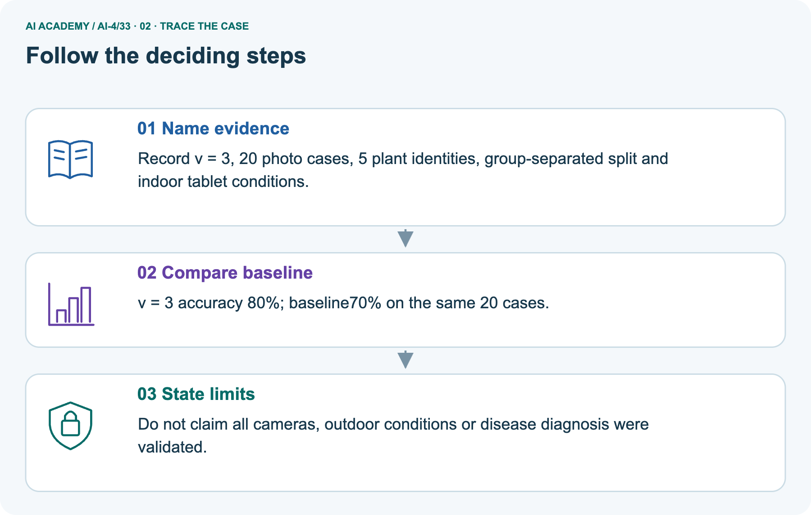
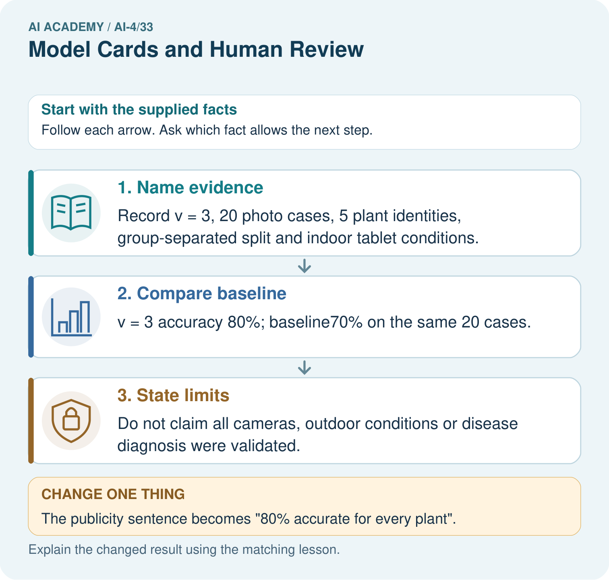
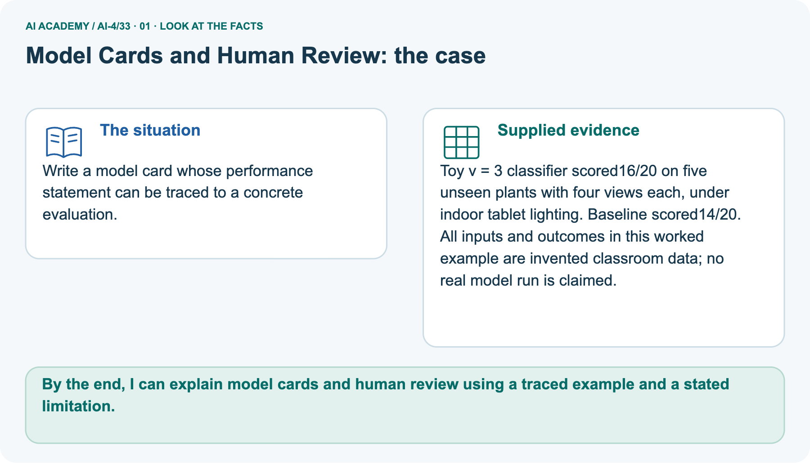
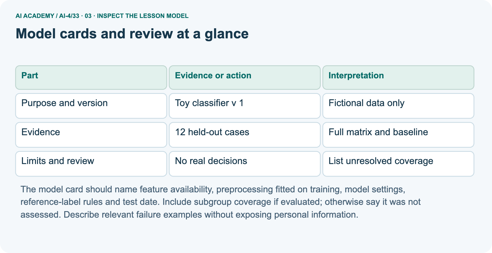
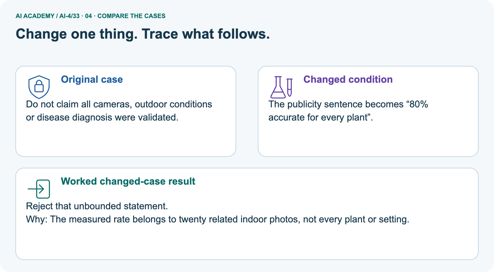
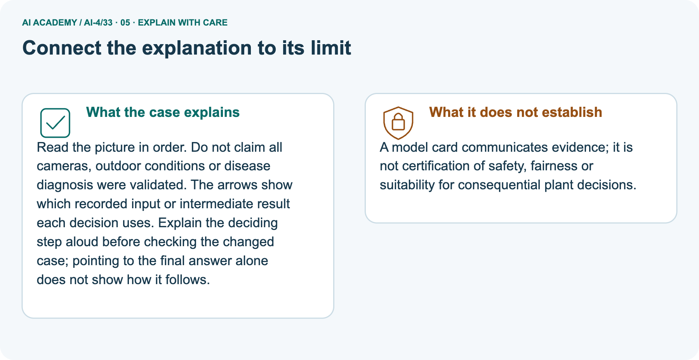
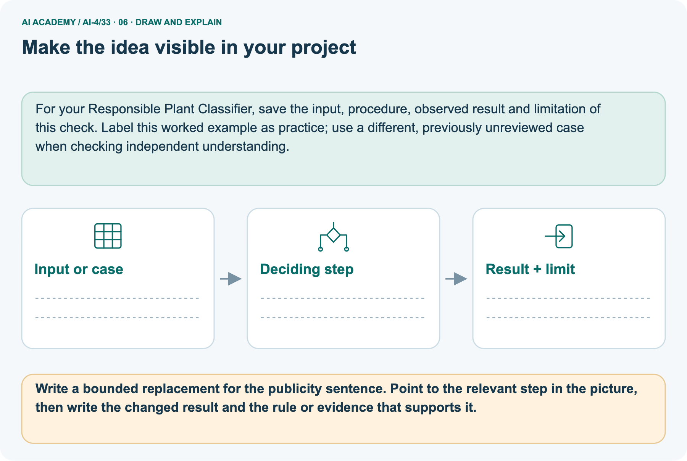

AI Academy · Level 4 · Grade 9 · Week 33 · Teacher guide
Model Cards and Human Review
Learn to understand, design, build, test and explain AI systems responsibly.
Project: Responsible Plant Classifier
THE CONNECTED WEEK
Teach documentation without inventing readiness.
Supply complete drafts and metric evidence,keep missing artifacts/pending review explicit and distinguish paper exercises from actual releases.
Keep one habit: Require bounded statements,versioned updates and an honest human-review record.
Main lesson · Section 1
Prepare the connected experiment
Keep prior exposure, shared practice and independent evidence distinct.
Goal and main teaching plan
Primary target: Write a model card whose claims match evidence
| Session | Sequence and minutes | Resources |
|---|---|---|
| Session 1 · Understand · 45 min | 0–7: recall and prerequisite; 7–15: inspect the concrete case and predict; 15–30: teacher models the worked trace; 30–40: learners explain a step using the text and visual; 40–45: check the core idea. | Sections 1–6; record the brief recall in the workbook. |
| Session 2 · Practise · 45 min | 0–5: retrieve the procedure; 5–15: W2 completion practice; 15–23: explain and check with a partner; 23–30: each learner answers the misconception check; 30–40: targeted reteaching or a harder variation; 40–45: prepare the investigation. | Sections 7–10; use the matching workbook W2 and misconception check. |
| Session 3 · Investigate and transfer · 45 min | 0–5: retrieve the decision rule; 5–20: investigate or trace; 20–30: start the independent case; 30–38: connect the project; 38–43: act on feedback; 43–45: plan the return check. | Use “Run the investigation”, “Connect your project”, “Show what you know”, “Study a complete case” and “Try a new case independently”. Give extra time for the full task set. If this week has a coding lab, use its named section; section numbers can change when extra explanations are included. |
This is a starting allocation of 135 minutes, not a validated duration. Preserve all named topics. Schedule extra time for connected examples, the full investigation, independent cases and project building.
Repeated copies of a case share one recorded attempt; they are not new evidence.
Materials and prerequisite
Teach two 45-minute sessions. This week focuses on model cards and review. Model the worked example first, collect the new W 4 case independently before feedback, and use the fresh retry to check transfer.
Award credit for traceable reasoning and bounded claims, including justified uncertainty.
Use the supplied scenario, student illustrations and blank paper. For numeric work, offer counters or a calculator after learners show the setup. Fictional records are supplied; personal data and paid accounts are unnecessary.
Data provenance, model version, full results, limitations and decision history.
Printed student lesson and workbook
Paper, pencils and a calculator for fractions
The fictional examples and a blank evidence table
Saved classroom project records for critique; no personal student dataset required
Opening retrieval
Without opening the old lesson, explain one key idea from Proxy Features and Fairness. Give an example and a mistake that the idea helps you avoid.
Look for: Identify possible proxy features
Reference example, not the only acceptable wording: Teacher explanation: X occurs 8/10 north and 2/10 south in this sample. This supports an association, not a deterministic identity rule or a causal explanation.
Without opening the old lesson, explain one key idea from Improve Generalization. Give an example and a mistake that the idea helps you avoid.
Look for: Plan one evidence-led change and test it on source-separated validation cases
Reference example, not the only acceptable wording: Name the exact hypothesis,changed factor and fixed comparison protocol. In the synthetic crossed-background trial,training additions change the chosen feature and improve four validation views from two plants;this does not establish real diagnosis or final reliability. Preserve all outputs,source groups and fresh final-evaluation needs.
Without opening the old lesson, explain one key idea from Overfitting. Give an example and a mistake that the idea helps you avoid.
Look for: Compare training and validation evidence for model capacity
Reference example, not the only acceptable wording: Teacher explanation: Choose the line with validation MAE 3. The curve training MAE 0 does not compensate for validation MAE 8.
End goal
By the end, I can explain model cards and human review using a traced example and a stated limitation.
Earlier wording, alternatives and picture transcripts
Teach the learning cycle
Retrieval answer guidance
Proxy Features and Fairness
Improve Generalization
Overfitting
Use the student module and workbook section with this exact week title. The worked case, independent question and answers below form one aligned lesson sequence.
What the learner must demonstrate
Draft five model-card headings for a classroom leaf classifier. Why must the card state that its labels are classroom categories rather than professional plant diagnosis?
Concept to explain
A model card defines intended use, evidence, limitations, risks, decision boundaries, monitoring, and human escalation.
| Term | Meaning |
|---|---|
| model card | deployment-facing model documentation |
| intended use | approved purpose and setting |
| do-not-use | explicit prohibited application |
| human review | authorized person checks or decides |
Prepare the class
This compact option is not the full-week schedule. Use the main teaching cycle and allow extra sessions for the investigation, independent work and project.
Allow 80 minutes: recall 8; explanation 12; worked demonstration 15; guided practice 20; independent assessment 15; project and reflection 10. Extend the lab into a second session when needed.
Preparation for the connected explanation
Readiness answer
End goal for the pictorial case
This added worked case illustrates the week’s main idea. Retain all original and connected topics; schedule its practice within the teaching cycle.
Main lesson · Section 2
Teach the card as evidence,scope and review status
Keep the fictional versions and source counts separate throughout the comparison.
Model-card explanation and complete main card
A model card helps another person understand what was built and what evidence exists. It is a record, not a certificate of safety. Link statements to saved data and run records.
Use unknown or not evaluated where evidence is absent instead of filling gaps with optimistic language.
Use fictional classroom data throughout this investigation. Keep the task, units, reference labels and data split visible as you reason.
Earlier weeks supplied the model-building process; this week examines model cards and review.
| Complete main paper model-card field | Evidence-linked entry / status |
|---|---|
| Identity / use | Classroom parcel-lane classifierV1; fictional clear/blocked method-comparison record only. |
| Data / split premise | Training40, validation 20, test 12 with separate source groups as supplied; detailed training files and actual code state are not supplied. |
| Positive / metrics | Blocked positive, clear/blocked axes; TN 7, FP 1, FN 2, TP 2; accuracy 9/12=75%, precision 2/3≈66.7%, recall 2/4=50%. |
| Baseline | Previously fitted always-clear baseline 8/12≈66.7%on the same references; training label counts are not supplied. |
| Unresolved fields | Exact feature/preprocessing/code/dependency versions, training provenance, collection coverage and teacher review status are not supplied. Mark unknown/request evidence. |
| Excluded / unsupported use | No real parcel, student, agricultural or professional diagnosis decision is supported. |
| Review / update | Draft teaching card; no real sign-off is asserted. Version changes require matching evidence and renewed review record. |
Example card: classroom parcel classifier v 1; purpose: compare toy classification methods on fictional clear/blocked labels. Training 40, validation 20, test 12 with separate record groups.
Frozen test TN 7 FP 1 FN 2 TP 2, blocked positive: accuracy 9/12, precision 2/3, recall 2/4. Always-clear baseline scores 8/12. No real parcel or student decision is supported.
Before continuing, underline the decision rule and circle the evidence that supports the conclusion. Explain the example to a partner without replacing the counts or conditions with a stronger claim.
Keep the distinction between an observed result and a proposed next step.
| Term | Meaning |
|---|---|
| Model card | A concise structured account of a model and its limits |
| Intended use | The purpose and conditions the evidence supports |
| Out-of-scope use | A purpose for which the model is not supported |
| Review status | The current state of checks and unresolved issues |
Model cards and review at a glance
Read separate picturedV3record
Write a model card whose performance statement can be traced to a concrete evaluation.
Toy v = 3 classifier scored16/20 on five unseen plants with four views each, under indoor tablet lighting. Baseline scored14/20.
All inputs and outcomes in this worked example are invented classroom data; no real model run is claimed.
Main cardV1 has12 test records and matrixTN7/FP 1/FN 2/TP 2; baseline 8/12. Separate pictureV3 has16/20 photo cases correct, baseline 14/20, and only 5 unseen plant identities with 4 views each under indoor tablet conditions. Its80%versus 70%accuracy does not provide a confusion matrix, positive recall or performance on every plant.
A bounded sentence must retain version, 20 photo/5 plant counts, conditions and the unknown broader coverage. No original model/code artifacts or actual teacher approval are supplied by these worked numbers.
Trace source identities and reject the universal headline



Read the picture one step at a time
Read the picture in order. Do not claim all cameras, outdoor conditions or disease diagnosis were validated. The arrows show which recorded input or intermediate result each decision uses.
Explain the deciding step aloud before checking the changed case; pointing to the final answer alone does not show how it follows.
A model card communicates evidence; it is not certification of safety, fairness or suitability for consequential plant decisions.
Change: The publicity sentence becomes “80% accurate for every plant”.
Prediction: Reject that unbounded statement.
Reason: The measured rate belongs to twenty related indoor photos, not every plant or setting.
Additional healthy/spotted80%only card
A model card says healthy/spotted,80% accuracy only.
Add responsible-use evidence.
Intended users/conditions, labels/data, evaluation sets/metrics, class/subgroup results, versions, limitations, excluded uses and human review. Classroom classification is not professional diagnosis.
Earlier wording, alternatives and picture transcripts
Explain the mechanism
Trace the information, fitted behavior, and evaluation proof separately.
QUESTION Write a model card with a clear do-not-use case and review path.
MODEL IDEA A model card defines intended use, evidence, limitations, risks, decision boundaries, monitoring, and human escalation.
PROOF NEEDED Use an unseen case, visible calculation, error analysis, and a stated limitation.
UNDER THE HOOD Intended use: classroom exploration of visible leaf spotting. Evidence: test metrics, confusion matrix, subgroup slices, and data version.
Draw a fresh data → model → prediction → evaluation trace:
Predict first. Then check each step. A correct answer without visible evidence cannot be audited.
STEP 1 Intended use: classroom exploration of visible leaf spotting.
STEP 2 Evidence: test metrics, confusion matrix, subgroup slices, and data version.
STEP 3 Do not use for pesticide, medical, or agricultural diagnosis.
STEP 4 Uncertain, unfamiliar, or high-consequence cases route to a teacher or qualified adult.
CHECK Verify the denominator, unit, split, class definition, and data version before interpreting a score.
Recalculate, retrace, or restate the evidence independently:
Concrete teaching case
Exact explanation to model
Explain the added worked example
Key terms
Model the reasoning aloud
Use the complete worked example below before asking learners to complete W2. Reveal a small part, invite a prediction, then explain the deciding step.
These teacher notes contain solutions; do not reveal the independent case answer during modelling.
| Thinking move | Teacher prompt |
|---|---|
| Plan | What is given? What is the question? Which procedure fits these facts? |
| Do | Point to each input and intermediate step in the worked trace. Name the rule that allows the next step. |
| Check | Does the output answer the question? Which assumption or limitation prevents a larger claim? |
Use the diagram and verbal explanation together. Ask learners to match a sentence to a specific visual step; do not assign learners fixed visual or auditory learning styles.
A pictorial worked case: Model Cards and Human Review
The facts we will use



Why this result follows
What this example does not establish
Change one thing in the pictured case
Ask while showing the picture
Cover the result. Ask learners to name the inputs and predict the next step. Uncover one step, connect the icon to the actual procedure, and explain its evidence. Then change the supplied condition and compare.
The picture is a representation; it does not document execution of a real AI model.
Main lesson · Section 3
Guide the calculation, then remove help
Collect each learner’s prediction before showing its key.
Current completion task and checked key
Completion task: Verify the worked accuracy, precision and recall.
Teacher check: Teacher explanation: TN 7 TP 2 give 9/12 accuracy; TP 2/(TP 2+FP 1)=2/3 precision; TP 2/(TP 2+FN 2)=2/4 recall.
Start by identifying the given inputs together. Leave the intermediate steps blank. If needed, model one step, then withdraw that help on the next step. Move to a full trace only when the partial trace is understood.
For partners, alternate explainer and checker; collect a response from every learner before discussion.
Individual misconception check
Use the worked case for Model cards and review. Proposed explanation: “A final answer is enough”. Decide whether this explanation is supported. Point to the step or supplied fact that decides; explain your repair if needed.
Expected correction: Ask for the relevant counts, units, procedure or saved record. For this week: Intended: compare toy classifiers on the documented fictional task.
Not supported: real parcel handling, student assessment or decisions outside the evaluated setup.
Collect explanations, not only yes/no votes. If a misunderstanding is common, re-model the relevant step for the class.
If it affects a few learners, give a short targeted group explanation while others solve a more demanding variation.
Pictorial question and changed-case reasoning
Write a bounded replacement for the publicity sentence. Point to the relevant step in the picture, then write the changed result and the rule or evidence that supports it.
“v = 3 matched16 of20 reference labels on five held-out plants photographed indoors by tablet; baseline matched14 of20 under the same conditions.” Changed-case check: Reject that unbounded statement.
The measured rate belongs to twenty related indoor photos, not every plant or setting.
Changed-case reasoning: Reject that unbounded statement. The measured rate belongs to twenty related indoor photos, not every plant or setting.
Collect each learner’s explanation before discussion. Use the first missing connection between input, deciding step and result to choose support. This question is worked-case practice, not fresh mastery evidence.
Keep each learner explaining
Ask: Which facts are given, and which would we have to assume? Learners mark relevant details before discussing answers.
Say: Predict first. Show the rule, information path or calculation that would produce the result. A correct guess is not yet an explanation.
In pairs, one learner solves while the other checks evidence; exchange roles. Remove the worked answer before independent assessment.
Earlier wording, alternatives and picture transcripts
Compact alternative: this two-session sequence covers selected core tasks. Use the three-session weekly plan for the full lesson, independent transfer, feedback and project work; allow extra time for extensions.
Demonstrate and guide practice
Board sequence
Write the given facts: A model card says healthy/spotted,80% accuracy only.
Write the question to explain: Add responsible-use evidence.
Reveal after predictions: Intended users/conditions, labels/data, evaluation sets/metrics, class/subgroup results, versions, limitations, excluded uses and human review. Classroom classification is not professional diagnosis.
Use the earlier transfer question as additional practice. Reserve the selected fresh unsupportedV2universal-school claim for the first individual attempt and record support used.
Classroom dialogue
Reveal reasoning one step at a time. Explain why a tempting alternative fails. Write units and denominators for arithmetic, trace conditions for decisions, and identify supporting sources for claims.
Model these guided questions
Guided response: TN 7 TP 2 give 9/12 accuracy; TP 2/(TP 2+FP 1)=2/3 precision; TP 2/(TP 2+FN 2)=2/4 recall.
Exit response: Record a new version, threshold, reason, affected evaluations and review status; retain prior results and distinguish new independent evidence from reused development data.
Case-specific teaching sequence
| Stage | Teacher action |
|---|---|
| Session 1 start to 7 minutes | Use the prerequisite question: What should remain visible after an evaluation? Check the explanation before proceeding. |
| 7 to 18 minutes | Read the opening and model the worked evidence. Ask students to identify model card in context. |
| 18 to 32 minutes | Complete W 1 and W 2 with support: draft a purpose; check arithmetic. Require the evidence, not only the final response. |
| 32 to 45 minutes | Read the visual row by row. Collect the guided explanation and compare reasoning in pairs. Connect each conclusion to the stated evidence. |
| Session 2 start to 8 minutes | Retrieve the distinction between model card and intended use. Invite a counterexample to an overconfident claim. |
| 8 to 20 minutes | Discuss the application and complete W 3: A card says fair and reliable but provides only accuracy. Request three additions. |
| 20 to 35 minutes | Collect W4 independently before giving hints. Assess these outcomes: Write a model card whose claims match evidence; Separate intended use from unsupported use. Record any support used. |
| 35 to 45 minutes | Use W 5 and the exit response to assess limits. Give targeted feedback, then the fresh retry. Save evidence of independent understanding. |
Reduce help deliberately
Individual reasoning check
Pictorial practice question
Reasoned teacher answer
Main lesson · Section 4
Run the complete supplied investigation
Keep predictions, observed or supplied outcomes and unmeasured cases separate.
Supplied inputs and checked guidance
ClinicDraftAhas unsupported universal/safety/no-review claims. DraftBbounds the suppliedV1 record and marks missing code/provenance/coverage/review as unknown; it does not create readiness evidence. RecoverRmatrix7/1/2/2, candidate 9/12, baseline 8/12. SelectedV2 reported90%cannot be audited withoutcounts, source/splits/references/baseline/errors/use; request those and state that performance scope is not established.
Do not invent a replacement score or infer recall.
Predict, investigate and record
1. Write the hypothesis and expected evidence before running.
2. Model Card Clinic: compare two cards, find unsupported claims and missing gates, then author a release-ready version.
3. Run one normal, one boundary, one missing, and one shifted case.
4. Calculate the metric from raw counts or row-level errors.
5. Interpret what changed, what did not, and what remains unsafe or unknown.
Keep the experiment ledger
| Record | What to capture |
|---|---|
| Input or evidence | Exact data, instruction or claim |
| Expected result | Answer or safe fallback declared before the run |
| Observed result | Actual result, including errors |
| Explanation | Rule, calculation or evidence explaining the outcome |
| Next test | One justified change and a new prediction |
Diagnose the current misconceptions
A final answer is enough: Ask for the relevant counts, units, procedure or saved record. For this week: Intended: compare toy classifiers on the documented fictional task.
Not supported: real parcel handling, student assessment or decisions outside the evaluated setup.
A stronger claim makes a stronger project: Record a new version, threshold, reason, affected evaluations and review status; retain prior results and distinguish new independent evidence from reused development data.
The new case can be copied from the example: The independent task changes the evidence. Require a fresh explanation: Request evaluated counts, split history, reference labels, baseline, errors and supported use.
Replace the universal claim with: performance scope is not established from the supplied evidence; the reported 90 percent cannot yet be audited.
Choose accessible support
| What the response shows | Next teaching action |
|---|---|
| Missing or misread facts | Read the case aloud, mark supplied versus unknown facts, and let the learner restate it. |
| Wrong procedure | Return to the deciding step in the worked case. Contrast it with the proposed incorrect explanation. |
| Arithmetic or implementation error | Trace intermediate values or lines; preserve the first mismatch and retry that step. |
| Correct result without a reason | Ask for a trace and a changed case before marking independent understanding. |
| An unsupported wider claim | Ask which supplied evidence supports the claim and which further observation would be needed. |
Offer an oral explanation, drawing, enlarged visual or fewer examples when that removes a reading/writing barrier. Keep the same reasoning goal.
Stretch secure learners by changing a boundary or assumption and asking them to defend the effect, not simply by assigning more of the same questions.
Earlier wording, alternatives and picture transcripts
Run the weekly evidence lab
Keep the test conditions fixed, record every result, and change only one planned factor.
Make the lab runnable
Use the supplied complete investigation for shared practice. Reserve the selected fresh unsupportedV2universal-school claim for the individual first attempt before hints or feedback; earlier transfer questions remain additional practice.
Diagnose and reteach
MISCONCEPTION TO REPAIR A disclaimer at the bottom of the screen is a complete safety plan.
For guessing, return to given facts and request a trace. For vocabulary without application, use one example and one non-example. For arithmetic errors, check the setup before the calculation.
Finish with a different uncoached case before recording mastery.
Address these additional misconceptions
Match the support to the first error
Main lesson · Section 5
Assess the selected experiment transfer
Keep this key until after a first attempt; record any help and prior exposure.
Selected independent task and checked key
Selected case: Review this card: model v 2, 90 percent accurate, works for every school. No dataset size, split or baseline is given. Write a correction request with a bounded replacement claim.
Teacher explanation: Request evaluated counts, split history, reference labels, baseline, errors and supported use.
Replace the universal claim with: performance scope is not established from the supplied evidence; the reported 90 percent cannot yet be audited.
Judge trace, scope and support
| Dimension | Evidence required |
|---|---|
| Explanation | Names the applicable idea or procedure and ties it to the supplied facts. |
| Trace and result | Preserves the given inputs and shows the relevant intermediate steps; distinguishes a prediction from an observed execution. |
| Limits | States the assumptions, missing evidence or conditions under which the result would change. |
Record each dimension as not yet, with support, or independent. Accept a valid alternative procedure with a defensible trace.
Do not penalise an honestly recorded model failure if the learner correctly explains its evidence and limits.
Give one repair action
Name the earliest unsupported step and give one action to repair it. Have the learner make that repair now and explain why. Then assess the relevant skill on a fresh, fully specified case.
Confirm it was not previously practised with feedback; solve and check the new case before assigning it. A follow-up design prompt is a starting brief, not automatically an equivalent test.
W1 Draft a purpose
Write an intended-use and non-use statement for the worked card.
Teacher explanation: Intended: compare toy classifiers on the documented fictional task. Not supported: real parcel handling, student assessment or decisions outside the evaluated setup.
W2 Check arithmetic
Verify the worked accuracy, precision and recall.
Teacher explanation: TN 7 TP 2 give 9/12 accuracy; TP 2/(TP 2+FP 1)=2/3 precision; TP 2/(TP 2+FN 2)=2/4 recall.
W3 Find missing evidence
A card says fair and reliable but provides only accuracy. Request three additions.
Teacher explanation: Request full error counts and denominators, relevant subgroup coverage/results, data provenance and limits; remove unsupported fairness/reliability claims.
W5 Maintain the record
What should change in a card after a threshold revision?
Teacher explanation: Record a new version, threshold, reason, affected evaluations and review status; retain prior results and distinguish new independent evidence from reused development data.
Earlier wording, alternatives and picture transcripts
Assess and explain the answers
Worked case answer
Intended users/conditions, labels/data, evaluation sets/metrics, class/subgroup results, versions, limitations, excluded uses and human review. Classroom classification is not professional diagnosis.
Additional transfer practice question
A model card says 90% accuracy but gives no intended use, data conditions or human-review rule. What should be added before classroom use?
Reasoned practice answer
Add intended and excluded uses, dataset and evaluation conditions, subgroup results and limitations, plus when uncertain or consequential cases go to a human.
What counts as evidence
| Criterion | 0 points | 1 point | 2 points |
|---|---|---|---|
| Result | Incorrect or absent | Partly correct | Correct with necessary conditions |
| Reasoning | No supporting trace | Some steps | Clear mechanism, calculation or source support |
| Limit | Overclaims certainty | Vague limitation | Relevant uncertainty or missing fact |
| Transfer | Copies without adapting | Adapts with prompts | Solves a changed case independently |
Use 6/8 as a classroom checkpoint, with 2 required for both Result and Reasoning. This is a proposed teaching rule, not a validated certification threshold.
Do not count a coached answer as independent mastery; correct unsafe or unsupported claims regardless of total.
Feedback
Ask the learner to find the evidence that challenges this claim: “One aggregate score is sufficient documentation for responsible use.” Keep the first attempt and an uncoached retry separate.
Original transfer answer
Include intended use/users, data and label definitions, model/version, evaluation and subgroup results, limitations/excluded uses, and human-review process.
The card should connect claims to recorded tests and avoid presenting classroom labels as professional advice.
Explanations for the additional workbook examples
W1 Draft a purpose
W2 Check arithmetic
W3 Find missing evidence
W4 Apply independently
Review this card: model v 2, 90 percent accurate, works for every school. No dataset size, split or baseline is given. Write a correction request with a bounded replacement claim.
Teacher explanation: Request evaluated counts, split history, reference labels, baseline, errors and supported use.
Replace the universal claim with: performance scope is not established from the supplied evidence; the reported 90 percent cannot yet be audited.
W5 Maintain the record
Assess independent transfer
Selected case answer
Feedback that the learner uses
Main lesson · Section 6
Connect, support and revisit the experiment
Retain failures and assess a fresh parallel case after help.
Project evidence
Complete the Plant Classifier model card and require teacher sign-off before any classroom demonstration.
Keep the decision, input, result, explanation and remaining limitation in the project evidence record. Retrieve this record next week rather than restarting the project.
For your Responsible Plant Classifier, save the input, procedure, observed result and limitation of this check.
Label this worked example as practice; use a different, previously unreviewed case when checking independent understanding.
Support and selected reassessment
Use a tiny labelled dataset, explicit units and a named positive class. Stretch: require a baseline, held-out evaluation and subgroup or shifted-condition analysis with denominators.
Provide a blank evidence table and allow a verbal explanation before writing. Highlight the given conditions without supplying the W 4 conclusion. Use model card and intended use in full sentences.
Extension: alter one condition in the worked example and explain which conclusion changes and which remains supported.
For independent W 4, require: Request evaluated counts, split history, reference labels, baseline, errors and supported use.
Replace the universal claim with: performance scope is not established from the supplied evidence; the reported 90 percent cannot yet be audited.
Fresh retry: a card lists test accuracy 18/20 but omits positive-class recall and intended use. Ask for full matrix, class definition and bounded use; do not infer recall from accuracy.
Mark each criterion as independent, supported or not yet demonstrated. Reassess the reasoning after feedback; do not replace the first attempt silently.
Delayed return
Suggested return points in this level: ai-4/34, ai-4/36. Use actual classroom dates, adjusting for holidays and gaps. One, three and six teaching weeks are scheduling choices, not a claimed optimal spacing.
At a delayed check, ask for the idea from memory and a changed application. Compare with the earlier independent response and record support used.
For a new level, revisit the previous capstone before checking the new prerequisites.
| Record | Teacher evidence |
|---|---|
| Learner code and date | |
| Concept and case used; prior exposure | |
| Explanation / trace / limits | |
| Support and first repair | |
| Changed case and delayed outcome | |
| Next teaching action |
Use the evidence to choose reteaching or the next step. A completed page, confidence rating or attractive project does not by itself demonstrate understanding.
Bridge and reflection
Ask for one decision the learner can now justify and one situation requiring more evidence or human review. Confidence ratings are separate from correct independent performance.
Next: Week 34: Capstone Dataset and Baseline. Retrieve today’s evidence and identify what carries forward and what is new.
Next week: Capstone data and requirements. Carry forward the saved evidence and the distinction between development choices and justified claims.
Earlier wording, alternatives and picture transcripts
Connect and extend learning
Responsible Plant Classifier
Support and stretch
Exit reflection
Bridge to the next week
Support and fresh reassessment
Plan the delayed return
Project evidence from this case
Primary model-reporting reference
Primary framework reference: Mitchell and colleagues, Model Cards for Model Reporting: https://arxiv.org/abs/1810.03993 . The paper motivates reporting intended context and performance evidence; this classroom card is a simplified teaching record, not proof that the full framework or real deployment assessment has been completed.
Reference bank and extra practice
Choose the reference that helps your next step.
Reference · Alternative planning checklist
Reference · Section 7
Reference · Alternative planning checklist
Use alongside the main route without repeating the whole cycle.
Planning and assessment reference
Teaching target: Write a model card whose claims match evidence
Prepare the labelled worked-case picture, the matching workbook, fictional input cards and a place for individual responses. Check a local Python 3 environment before class; have a paper-trace version ready.
| Session | Plan | Resources |
|---|---|---|
| Session 1 · Understand · 45 min | 0–7: recall and prerequisite; 7–15: inspect the concrete case and predict; 15–30: teacher models the worked trace; 30–40: learners explain a step using the text and visual; 40–45: check the core idea. | Sections 1–6; record the brief recall in the workbook. |
| Session 2 · Practise · 45 min | 0–5: retrieve the procedure; 5–15: W2 completion practice; 15–23: explain and check with a partner; 23–30: each learner answers the misconception check; 30–40: targeted reteaching or a harder variation; 40–45: prepare the investigation. | Sections 7–10; use the matching workbook W2 and misconception check. |
| Session 3 · Investigate and transfer · 45 min | 0–5: retrieve the decision rule; 5–20: investigate or trace; 20–30: start the independent case; 30–38: connect the project; 38–43: act on feedback; 43–45: plan the return check. | Use “Run the investigation”, “Connect your project”, “Show what you know”, “Study a complete case” and “Try a new case independently”. Give extra time for the full task set. If this week has a coding lab, use its named section; section numbers can change when extra explanations are included. |
Before class, solve the supported practice: Verify the worked accuracy, precision and recall.
Reasoned practice answer: Teacher explanation: TN 7 TP 2 give 9/12 accuracy; TP 2/(TP 2+FP 1)=2/3 precision; TP 2/(TP 2+FN 2)=2/4 recall.
Check every learner before discussion: Use the worked case for Model cards and review. Proposed explanation: “A final answer is enough”. Decide whether this explanation is supported.
Point to the step or supplied fact that decides; explain your repair if needed.
Misconception repair: Ask for the relevant counts, units, procedure or saved record. For this week: Intended: compare toy classifiers on the documented fictional task.
Not supported: real parcel handling, student assessment or decisions outside the evaluated setup.
Support: read the exact case aloud, enlarge the labelled picture, supply input cards and model only the first deciding step. Accept a spoken explanation or drawing; retain the reasoning goal.
Extension: The publicity sentence becomes “80% accurate for every plant”. Require a prediction and a reason before comparing. Expected result: Reject that unbounded statement.
Reason: The measured rate belongs to twenty related indoor photos, not every plant or setting.
Independent assessment: withhold the reserved answer until the learner has attempted the new case. Record support separately from correctness.
| Criterion | Not yet | With support | Independent |
|---|---|---|---|
| Explanation | Names an answer without a deciding fact | Uses a hint to link fact and decision | Explains the deciding fact in own words |
| Trace or test | Cannot connect input and result | Completes steps with prompts | Traces or tests a changed case accurately |
| Limits and revision | Claims more than evidence supports | Names a limit after a prompt | States a defensible limit and useful next test |
Project checkpoint: Present and defend. Demonstrate the system, explain one failure and justify the next improvement with evidence.
Use the weekly teacher answer for topic-specific reasoning. A saved progress tick is an activity record; judge mastery from the learner’s explanation and evidence.
Reference · Feedback and evidence records
Reference · Section 8
Reference · Feedback and evidence records
Keep supported rehearsal separate from independent performance.
Record and repair
Use the two formative questions as supported practice, not as independent mastery scores. Discuss the deciding evidence rather than accepting a guessed selection.
The feedback comes from the reviewed public worked case. Do not reveal the separately reserved independent teacher answer until the learner has attempted that case.
Use the earlier worked-explanation links to address a specific missing building block, then return to the current question. Adapt this suggestion after observing the learner; it is not an automatic diagnosis.
Collect the completed-work portfolio as evidence. Record support separately from correctness, and assess explanation, trace/test and limitations. Progress ticks and quiz selections alone do not establish mastery.
Earlier wording, alternatives and picture transcripts
This week has no code block. Use this routine when a later lesson includes an executable lab.
Ask students to predict before running code. Preserve errors and actual outputs; collect a changed test and an explanation. The branch-boundary and indexing lessons deliberately include failure cases.
Reference · Teach with the six pictures
Reference · Section 9
Reference · Teach with the six pictures
Choose one picture for a specific reasoning move.
01. Model Cards and Human Review: the case



Write a model card whose performance statement can be traced to a concrete evaluation. Supplied facts: Toy v = 3 classifier scored16/20 on five unseen plants with four views each, under indoor tablet lighting.
Baseline scored14/20. All inputs and outcomes in this worked example are invented classroom data; no real model run is claimed.
Point to the given fact that matters most. Explain why it matters.
Teacher prompt: Point to the given fact that matters most. Explain why it matters. Ask learners to describe one label or arrow in ordinary words. Use the adjacent transcript if the image is difficult to see.
02. Follow the deciding steps
Name evidence: Record v = 3, 20 photo cases, 5 plant identities, group-separated split and indoor tablet conditions. → Compare baseline: v = 3 accuracy 80%; baseline70% on the same 20 cases. → State limits: Do not claim all cameras, outdoor conditions or disease diagnosis were validated.
Point to each numbered stage and explain which recorded input it uses.
Teacher prompt: Point to each numbered stage and explain which recorded input it uses. Ask learners to describe one label or arrow in ordinary words. Use the adjacent transcript if the image is difficult to see.
03. Model cards and review at a glance



Model cards and review at a glance. Purpose and version | Toy classifier v 1 | Fictional data only. Evidence | 12 held-out cases | Full matrix and baseline. Limits and review | No real decisions | List unresolved coverage
Read the labels and values. Explain the relationship the model shows.
Teacher prompt: Read the labels and values. Explain the relationship the model shows. Ask learners to describe one label or arrow in ordinary words. Use the adjacent transcript if the image is difficult to see.
04. Change one thing. Trace what follows.



Original case: Do not claim all cameras, outdoor conditions or disease diagnosis were validated. Changed condition: The publicity sentence becomes “80% accurate for every plant”.
Expected result: Reject that unbounded statement. Reason: The measured rate belongs to twenty related indoor photos, not every plant or setting.
Predict before checking the worked changed-case result. Name what changed and what the supplied facts allow you to conclude.
Teacher prompt: Predict before checking the worked changed-case result. Name what changed and what the supplied facts allow you to conclude. Ask learners to describe one label or arrow in ordinary words.
Use the adjacent transcript if the image is difficult to see. Changed-case reasoning: The measured rate belongs to twenty related indoor photos, not every plant or setting.
05. Connect the explanation to its limit



Read the picture in order. Do not claim all cameras, outdoor conditions or disease diagnosis were validated. The arrows show which recorded input or intermediate result each decision uses.
Explain the deciding step aloud before checking the changed case; pointing to the final answer alone does not show how it follows.
Limit: A model card communicates evidence; it is not certification of safety, fairness or suitability for consequential plant decisions.
Explain the case, then point to a limit on the claim.
Teacher prompt: Explain the case, then point to a limit on the claim. Ask learners to describe one label or arrow in ordinary words. Use the adjacent transcript if the image is difficult to see.
Keep the stated scope: A model card communicates evidence; it is not certification of safety, fairness or suitability for consequential plant decisions.
06. Make the idea visible in your project



For your Responsible Plant Classifier, save the input, procedure, observed result and limitation of this check.
Label this worked example as practice; use a different, previously unreviewed case when checking independent understanding. Draw your input, deciding step, result and limit.
Supported question: Write a bounded replacement for the publicity sentence. Point to the relevant step in the picture, then write the changed result and the rule or evidence that supports it.
Draw your project trace and justify the deciding step using evidence.
Teacher prompt: Draw your project trace and justify the deciding step using evidence. Ask learners to describe one label or arrow in ordinary words. Use the adjacent transcript if the image is difficult to see.
Supported practice key: “v = 3 matched16 of20 reference labels on five held-out plants photographed indoors by tablet; baseline matched14 of20 under the same conditions.” Changed-case check: Reject that unbounded statement.
The measured rate belongs to twenty related indoor photos, not every plant or setting.
Earlier wording, alternatives and picture transcripts
Use one picture at a time. Hide a worked result before asking for a prediction, then reveal it for feedback. These are supported teaching cases; retain the separate independent assessment for a fresh first attempt.